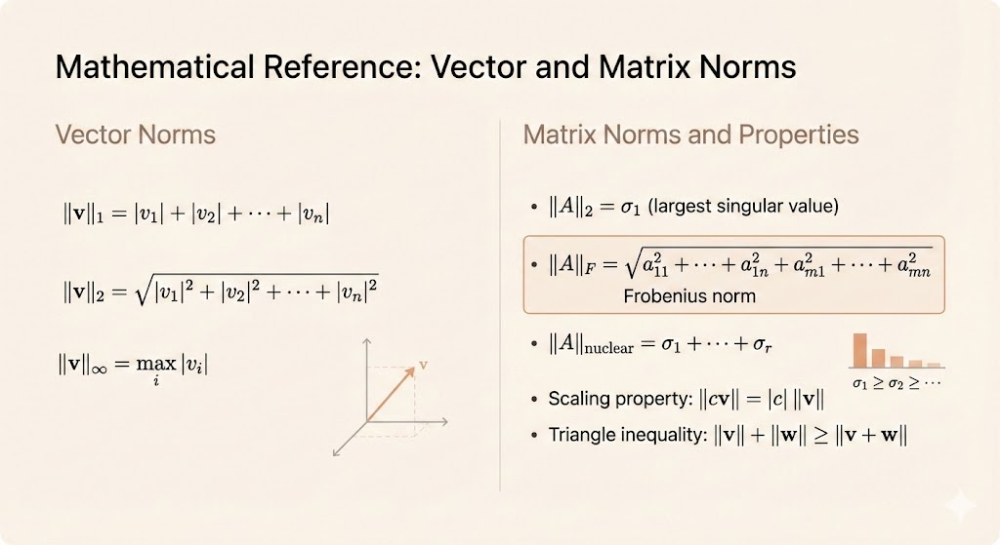
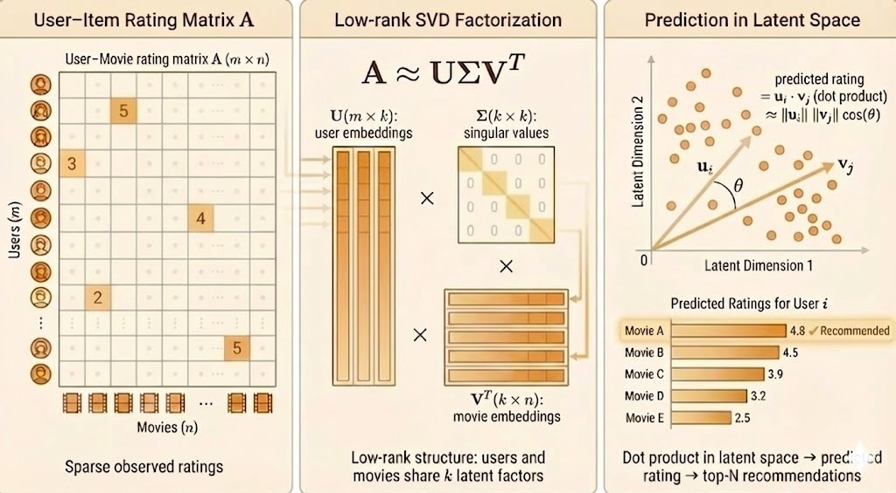

MIT 18.065 Lecture 7: Eckart-Young Theorem - The Closest Rank k Matrix
The Low-Rank Approximation Problem
Given a matrix \(A \in \mathbb{R}^{m \times n}\), how do we find the best rank-\(k\) approximation? That is, among all matrices \(B\) with \(\text{rank}(B) \le k\), which one minimizes \(\|A - B\|\)?
The answer comes from the Eckart-Young theorem: simply truncate the SVD at the first \(k\) terms.
SVD and Rank-k Truncation
Recall the SVD decomposition:
\[ A = U\Sigma V^\top = \sigma_1 u_1 v_1^\top + \sigma_2 u_2 v_2^\top + \cdots + \sigma_r u_r v_r^\top \]
where \(\sigma_1 \ge \sigma_2 \ge \cdots \ge \sigma_r > 0\) are the singular values, and \(r = \text{rank}(A)\).
The rank-k truncation keeps only the first \(k\) terms:
\[ A_k = \sigma_1 u_1 v_1^\top + \sigma_2 u_2 v_2^\top + \cdots + \sigma_k u_k v_k^\top \]
Equivalently, \(A_k = (U\Sigma V^\top)_k\) where we zero out singular values \(\sigma_{k+1}, \ldots, \sigma_r\).
For any matrix \(B\) with \(\text{rank}(B) \le k\):
\[ \|A - B\| \ge \|A - A_k\| \]
This holds for the 2-norm (\(\|A\|_2 = \sigma_1\)) and the Frobenius norm (\(\|A\|_F = \sqrt{\sigma_1^2 + \cdots + \sigma_r^2}\)).
In other words: The best rank-\(k\) approximation to \(A\) is the truncated SVD \(A_k\).
Matrix Norms
Before diving into applications, let’s review the key matrix norms:
Vector Norms
For a vector \(v \in \mathbb{R}^n\):
- L1 norm: \(\|v\|_1 = |v_1| + |v_2| + \cdots + |v_n|\)
- L2 norm (Euclidean): \(\|v\|_2 = \sqrt{|v_1|^2 + |v_2|^2 + \cdots + |v_n|^2}\)
- L∞ norm (max norm): \(\|v\|_\infty = \max_i |v_i|\)
Matrix Norms
For a matrix \(A \in \mathbb{R}^{m \times n}\) with SVD \(A = U\Sigma V^\top\):
- Spectral norm (2-norm): \(\|A\|_2 = \sigma_1\) (largest singular value)
- Frobenius norm: \(\|A\|_F = \sqrt{a_{11}^2 + a_{12}^2 + \cdots + a_{mn}^2} = \sqrt{\sigma_1^2 + \cdots + \sigma_r^2}\)
- Nuclear norm: \(\|A\|_* = \sigma_1 + \sigma_2 + \cdots + \sigma_r\) (sum of singular values)
Norm Properties
All norms satisfy:
- Homogeneity: \(\|cv\| = |c| \cdot \|v\|\)
- Triangle inequality: \(\|v + w\| \le \|v\| + \|w\|\)
- Positive definiteness: \(\|v\| = 0 \iff v = 0\)

Why Eckart-Young Works: Orthogonal Invariance
The key insight behind the Eckart-Young theorem is orthogonal invariance:
Vector Case
For an orthonormal matrix \(Q\) and vector \(v\):
\[ \|Qv\|_2^2 = (Qv)^\top (Qv) = v^\top Q^\top Q v = v^\top v = \|v\|_2^2 \]
Multiplying by an orthogonal matrix preserves the norm!
Matrix Case
For a matrix \(A = U\Sigma V^\top\) and orthogonal \(Q\):
\[ QA = (QU)\Sigma V^\top \]
Since \(QU\) is also orthogonal, the norms remain unchanged. This property allows us to work in a simpler coordinate system where the proof becomes transparent.
Real-World Applications
Netflix Prize Competition
The Netflix Prize famously used low-rank matrix approximation for collaborative filtering:
- \(A \in \mathbb{R}^{m \times n}\): \(m\) users × \(n\) movies (sparse, mostly unrated)
- SVD factorization: \(A \approx U\Sigma V^\top\)
- \(U\): user preferences/features
- \(\Sigma\): strength of latent patterns
- \(V\): movie characteristics/genres
Strategy: Use low-rank approximation \(\hat{A} = A_k\) to predict missing ratings.
For each user-movie pair \((i,j)\) where rating is unknown:
\[ \hat{A}_{ij} = \sum_{\ell=1}^k \sigma_\ell u_{i\ell} v_{j\ell} \]
This score predicts how much user \(i\) would enjoy movie \(j\).

Medical Imaging (MRI)
In MRI, we face incomplete measurements but can exploit natural structure:
- \(A \in \mathbb{R}^{m \times n}\): image matrix (many pixels)
- Assumption: Real images are low rank (smooth, structured)
- Goal: Recover full image from partial measurements
SVD gives the best rank-\(k\) approximation:
\[ A = U\Sigma V^\top, \quad A_k = \sum_{i=1}^k \sigma_i u_i v_i^\top \]
By Eckart-Young, \(A_k\) minimizes reconstruction error among all rank-\(k\) matrices.
Connection to Principal Component Analysis (PCA)
PCA is fundamentally about finding the best low-rank approximation to centered data.
Setting Up the Data Matrix
Suppose we have \(n\) data points in \(\mathbb{R}^2\) (e.g., height and age):
\[ A_0 = \begin{bmatrix} | & | & & | \\ v_1 & v_2 & \cdots & v_n \\ | & | & & | \end{bmatrix} \]
Step 1: Center the data by subtracting the mean of each feature:
\[ A = A_0 - \begin{bmatrix} a & a & \cdots & a \\ h & h & \cdots & h \end{bmatrix} \]
where \(a\) = mean age, \(h\) = mean height.
Covariance Matrix
The sample covariance matrix is:
\[ C = \frac{AA^\top}{n-1} = \begin{bmatrix} \text{var}_{\text{age}} & \text{cov}_{\text{age,height}} \\ \text{cov}_{\text{height,age}} & \text{var}_{\text{height}} \end{bmatrix} \]
Key connection: The SVD of \(A\) diagonalizes the covariance matrix!
- The left singular vectors \(u_i\) are the principal components (directions of maximum variance)
- The singular values \(\sigma_i\) relate to variance explained: \(\text{var}_i = \sigma_i^2 / (n-1)\)
By Eckart-Young, projecting onto the first \(k\) principal components gives the best rank-\(k\) approximation to the centered data.
Exercises
1. Find the Closest Rank-1 Approximation
For each matrix, find \(A_1\) (the best rank-1 approximation):
(a) \(A = \begin{bmatrix} 3 & 0 & 0 \\ 0 & 2 & 0 \\ 0 & 0 & 1 \end{bmatrix}\)
Solution: Already diagonal with \(\sigma_1 = 3\), so
\[ A_1 = \begin{bmatrix} 3 & 0 & 0 \\ 0 & 0 & 0 \\ 0 & 0 & 0 \end{bmatrix} \]
(b) \(A = \begin{bmatrix} 0 & 3 \\ 2 & 0 \end{bmatrix}\)
Solution: The largest singular value is \(\sigma_1 = 3\) (since \(A^\top A = \operatorname{diag}(4, 9)\)), but we can verify the rank-1 approximation by inspection. Computing the SVD or using the dominant singular vector gives:
\[ A_1 = \begin{bmatrix} 0 & 3 \\ 0 & 0 \end{bmatrix} \]
(c) \(A = \begin{bmatrix} 2 & 1 \\ 1 & 2 \end{bmatrix}\)
Solution: Symmetric with eigenvalues \(\lambda_1 = 3\), \(\lambda_2 = 1\). The dominant eigenvector is \(\frac{1}{\sqrt{2}}\begin{bmatrix} 1 \\ 1 \end{bmatrix}\), giving:
\[ A_1 = 3 \cdot \frac{1}{\sqrt{2}} \begin{bmatrix} 1 \\ 1 \end{bmatrix} \cdot \frac{1}{\sqrt{2}} \begin{bmatrix} 1 & 1 \end{bmatrix} = \frac{3}{2} \begin{bmatrix} 1 & 1 \\ 1 & 1 \end{bmatrix} = \begin{bmatrix} 1.5 & 1.5 \\ 1.5 & 1.5 \end{bmatrix} \]
2. Norms of the Inverse
If \(A\) is \(2 \times 2\) with singular values \(\sigma_1 \ge \sigma_2 > 0\), find:
- \(\|A^{-1}\|_2\)
- \(\|A^{-1}\|_F^2\)
Solution:
Since \(A = U\Sigma V^\top\), we have \(A^{-1} = V\Sigma^{-1} U^\top\) where
\[ \Sigma^{-1} = \begin{bmatrix} 1/\sigma_1 & 0 \\ 0 & 1/\sigma_2 \end{bmatrix} \]
Thus:
\[ \|A^{-1}\|_2 = \frac{1}{\sigma_2} \quad \text{(smallest singular value of } A \text{ becomes largest of } A^{-1}\text{)} \]
\[ \|A^{-1}\|_F^2 = \left(\frac{1}{\sigma_1}\right)^2 + \left(\frac{1}{\sigma_2}\right)^2 = \frac{1}{\sigma_1^2} + \frac{1}{\sigma_2^2} \]
Key Takeaways
- Eckart-Young theorem says the truncated SVD \(A_k\) is the optimal rank-\(k\) approximation
- This holds for both 2-norm and Frobenius norm
- Applications span data compression (Netflix), medical imaging (MRI), and dimensionality reduction (PCA)
- The proof relies on orthogonal invariance of norms
- Understanding different matrix norms helps us choose the right approximation criterion for each application